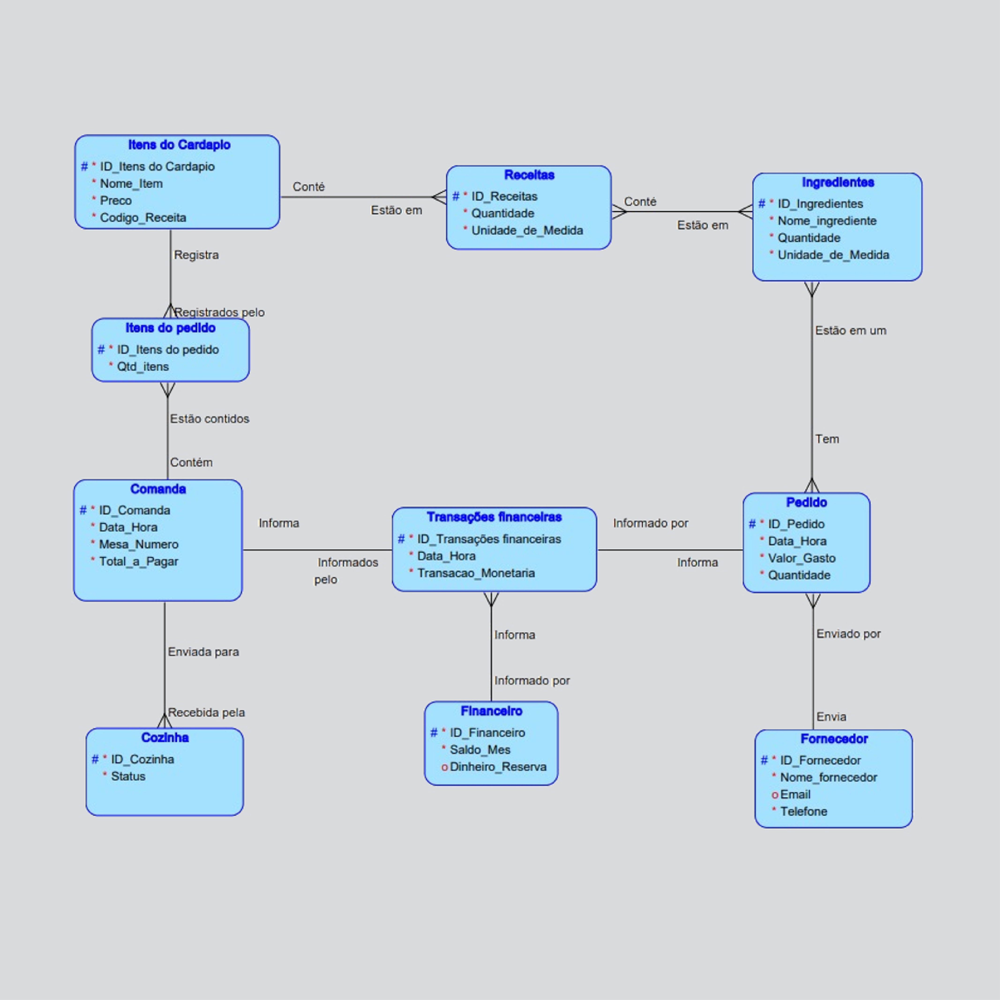
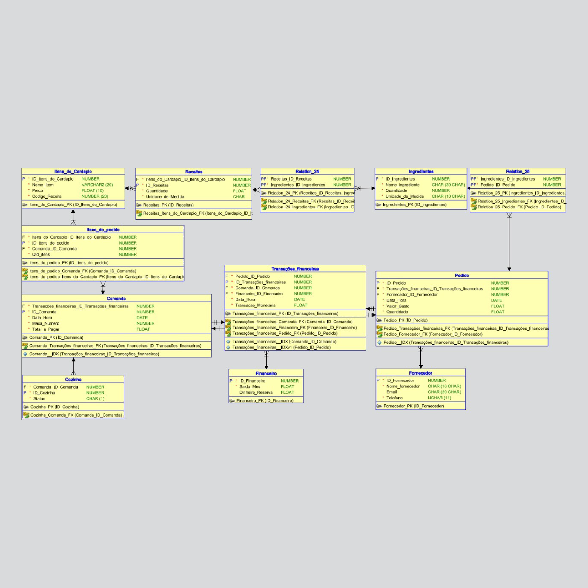
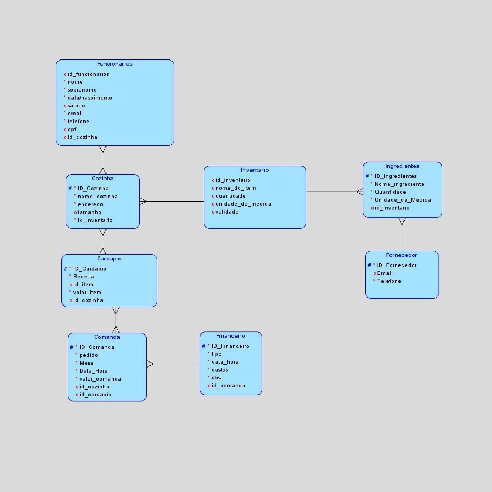
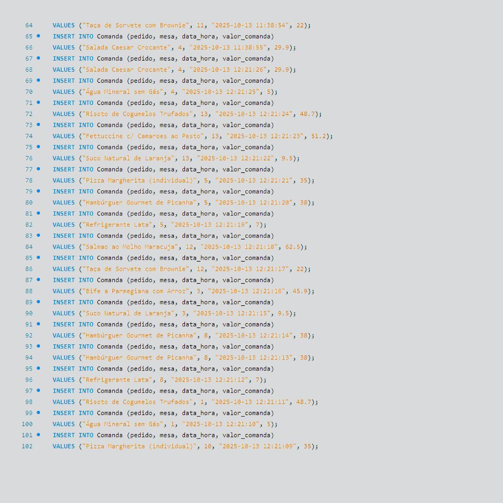
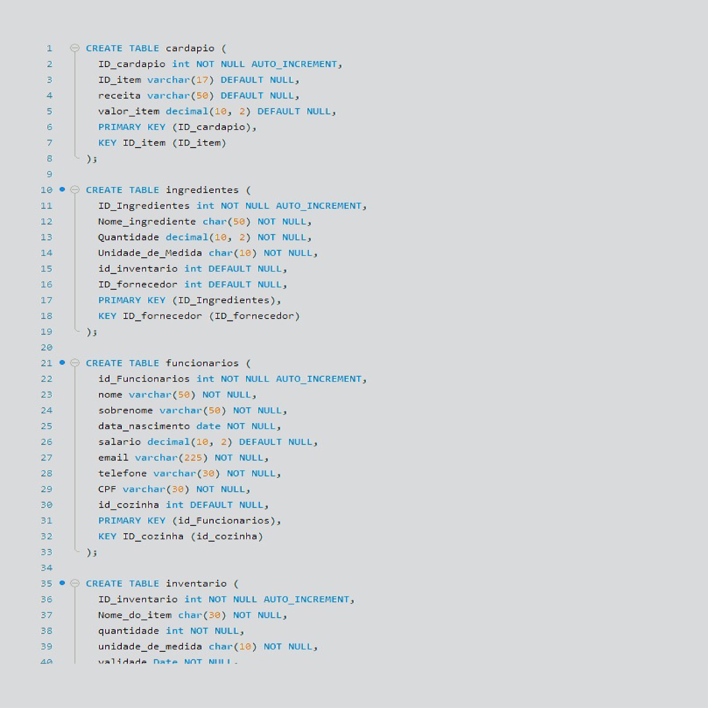
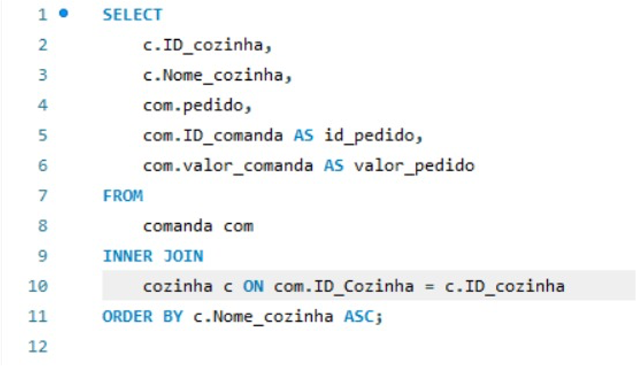
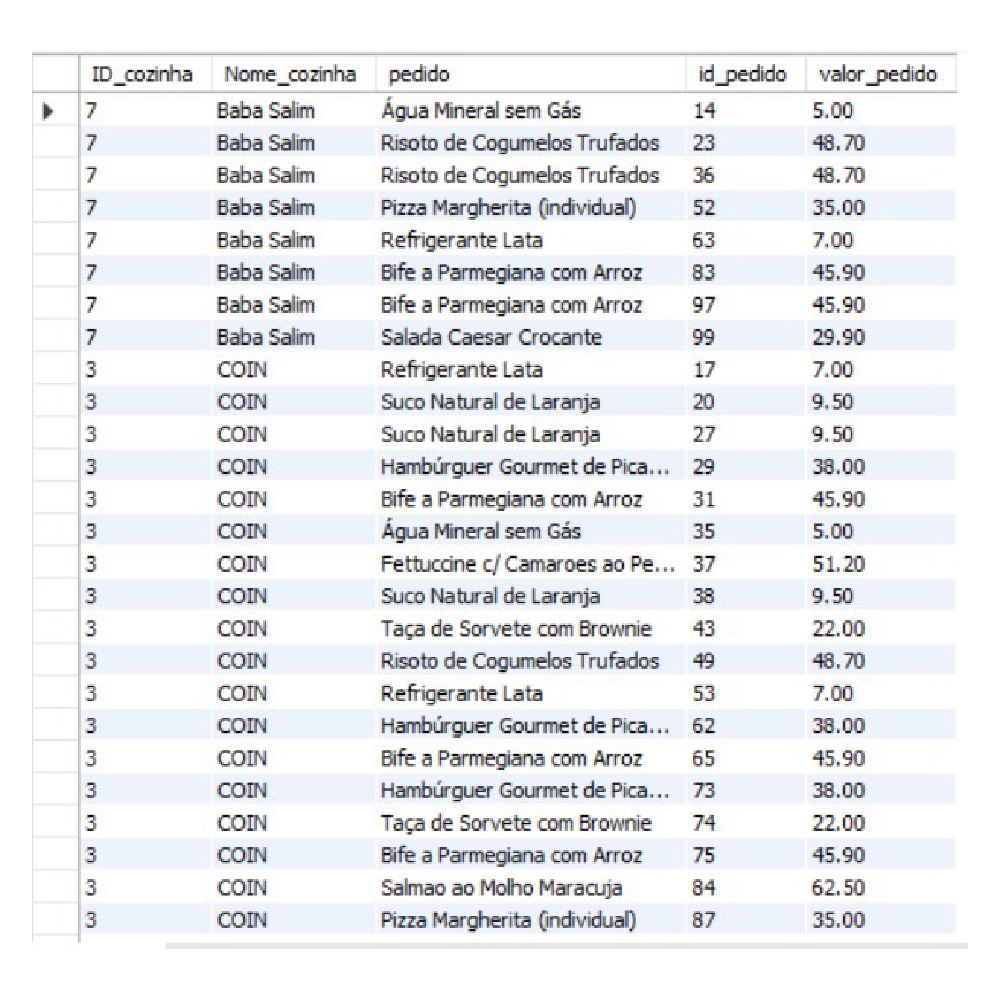
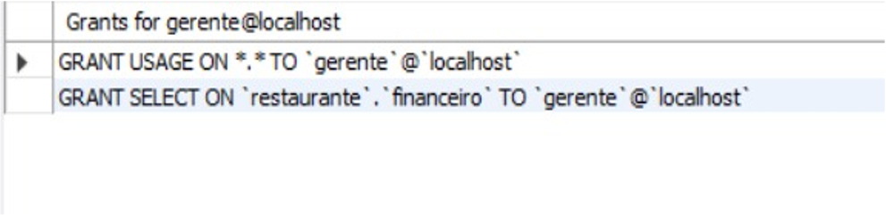
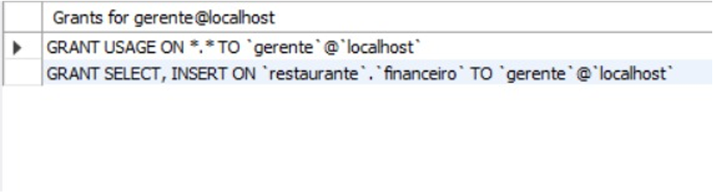
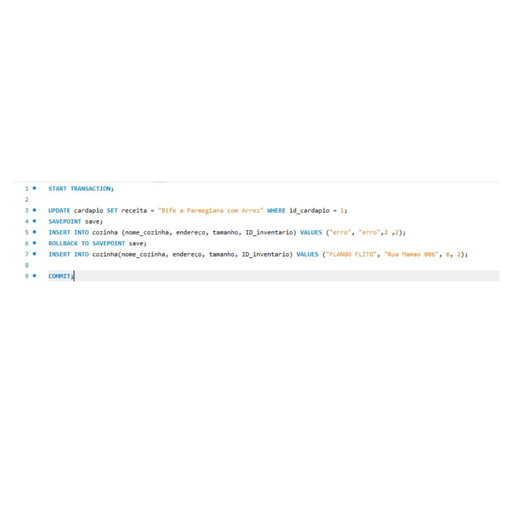

Resumo do Projeto de Banco de Dados Integrado e Otimização
Projeto de pesquisa para a disciplina de Banco de Dados da Universidade Positivo, para o curso de Análise e Desenvolvimento de Sistemas..
Docente: Prof. Rubem M. Koide
Projeto de pesquisa para a disciplina de Banco de Dados da Universidade Positivo, para o curso de Análise e Desenvolvimento de Sistemas..
Docente: Prof. Rubem M. Koide

O objetivo é implementar um sistema de Banco de Dados Relacional MySQL para gerenciar dados de um restaurante, garantindo dados confiáveis e acessíveis para a tomada de decisões.
→ É um sistema organizado criado para armazenar, gerenciar e recuperar informações de forma eficiente.
→ É guardar grandes volumes de dados com segurança e acesso rápido.

Servir como o "sistema nervoso central" do restaurante, transformando dados brutos em inteligência de negócio e abrangendo Vendas, Estoque, Finanças e Conformidade Legal.
→ Entrada/saída, Custo da Mercadoria Vendida (CMV), alertas e previsão.
→ Fluxo de caixa, contas a pagar/receber, lucratividade.
→ Ticket médio, itens mais vendidos, performance por turno

Foca em Segurança e Ética através da Governança de Dados e da aderência estrita à LGPD, utilizando Criptografia e o Princípio do Mínimo Privilégio.
→ Conjunto de políticas, processos e responsabilidades para gerir dados com qualidade e segurança.
→ Lei no 13.709/2018 (Artigos 6º, 7º e 8º), que regula tratamento de dados pessoais.
Estrutura de chaves e atributos das entidades primárias como Cardapio, Comanda, Receitas e Fornecedor, no formato de Diagrama Entidade-Relacionamento.

Representação do Schema Relacional e definição da estrutura para o Sistema de Gerenciamento do Banco de Dados (SGBD) MySQL, utilizando DDL (Data Definition Language) (DDL) com tipos de dados específicos.

Versão refinada do modelo lógico, incluindo entidades como Funcionarios, Cozinha, Inventario e Financeiro.
→ Refizemos a modelagem para melhorar as relações entre tabelas

DDL completo, com correções identificadas: necessidade de inclusão da tabela Clientes e correção da chave estrangeira de Funcionarios (deveria apontar para cozinha).
Comandos (INSERT, UPDATE, DELETE) para manipular o conteúdo das tabelas, usados implicitamente por triggers para automatizar processos como baixa de estoque.
→ INSERT (ALIMENTAÇÃO DA PLANILHA)

Define a estrutura física do banco de dados (tabelas, chaves) usando comandos como CREATE TABLE, PRIMARY KEY e FOREIGN KEY.
→ Alter Table, ADD COLUMN, & ADD FOREIGN KEY

Usa SELECT para gerar Business Intelligence (BI), sendo as consultas otimizadas e validadas com o comando EXPLAIN.


Controla os privilégios dos usuários (GRANT e REVOKE), implementando o Princípio do Mínimo Privilégio conforme a Matriz de Permissões.


Garante as propriedades ACID (COMMIT, ROLLBACK) em operações críticas, assegurando a Atomicidade e a integridade dos dados (Tudo ou Nada).

O sistema cumpriu os objetivos de governança, modelagem e otimização, mas requer ajustes finais no Schema (tabela Clientes e FK de Funcionarios) para conformidade total.
→ Modelagem refinada + Normalização otimizada
→ Consultas performáticas + Integridade total
→ Precisão • Segurança • Escalabilidade
→ Dados brutos → Insights estratégicos
→ Tempo real: Entradas, Saídas, Saldos, Financeiro, Projeções